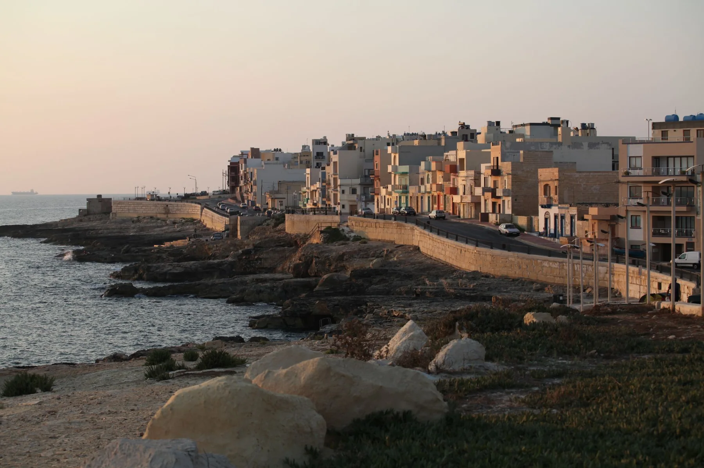

The inventory shows a shared locality centroid, not the building. It cannot establish a seafront position, nearest stop, gradient, parking arrangement, view or entrance.

IX-XGĦAJRA · PORT REGIONA compact coast.
A compact coast.
Different edges.
Xgħajra brings a built waterfront, promenade, Della Grazie heritage and a more open coast into close visual range. Those settings are distinct, and the locality name alone cannot place a home in any one of them.
READ THE ADDRESS
Coastal context needs exact ground truth.
Xgħajra is a separate council area beside Żabbar and the SmartCity/Kalkara side. The promenade, compact residential streets, battery setting and coast towards Inwadar are not interchangeable. Confirm the full address, entrance and permitted street route before planning a viewing.
Xgħajra is distinct from Żabbar, Kalkara, SmartCity, Marsaskala and Żonqor. Verify the actual street rather than relying on a nearby coast or landmark.
An official bathing-water area does not guarantee today's water, weather, access or suitability. Use current official notices and local conditions.
A visible edge, not every address.
The Local Council identifies the seaside promenade as a landmark. The official bathing-water profile records monitored points along the coast beside Dawret ix-Xatt. Neither source places a current listing by the water or promises a view, access route or swimming condition.
Official bathing-water profile ↗Heritage and park edges need a fresh check.
The council documents Della Grazie Battery and a restoration/public-space intention. Access and project status can change. The wider Inwadar coast is another context again; it should not be presented as the village centre or a listing amenity.
Ix-Xgħajra Local Council ↗EVERYDAY CHECKS
Plan with current operator information.
These official and operator pages structure a viewing without pretending to know what is nearest to a particular home. Recheck stops, schedules, service access, opening details and the real street route on the day.
Route 94
Malta Public Transport currently lists the Xgħajra–Valletta corridor in both directions. Timings, detours and the useful stop stay on the live timetable.
Current Route 94 ↗Cospicua catchment
Primary HealthCare's current overview places Xgħajra in the Cospicua Health Centre catchment. Services, eligibility and appointments remain on the live source.
Primary HealthCare ↗MyConvenience Xghajra 1
The operator directory lists this branch on Triq Sant' Elija. That establishes one local example, not the nearest shop, current stock, hours, parking or access.
Operator locations ↗Official water profile
The Environmental Health source identifies monitored Xgħajra bathing-water points. Use its current notices together with weather and sea conditions.
Current profile ↗ONE LICENSED EXAMPLE
Useful evidence, without a “best of” list.
The current MTA register returns one restaurant record in Xgħajra. It confirms a licensed name, street and locality only. It does not rank quality, describe today's menu or prove waterfront views or proximity to a home.
El Catalan Restaurant
The Malta Tourism Authority register records licence RST-13157 at this Xgħajra street. Hours, menu, prices and reservations need a current operator check.
Filtered MTA register ↗Della Grazie Battery
The council records the battery and restoration intention. Treat it as local heritage context until a current operator source confirms present access and project status.
Council historical places ↗A centroid is not a coastal route.
This edition draws no route. The shared Xgħajra coordinate is only an area-level map centre and cannot identify a property, promenade access, bathing point, battery approach or useful stop. Any future itinerary must name real endpoints, follow routed geometry and identify the mode and source.
Open the Xgħajra overview only when needed.
The map frames Xgħajra and surrounding place labels for orientation. It deliberately draws no council boundary, property pin, route, straight line, distance or travel time and loads from OpenStreetMap only after your click.
Office of the Address Registrar · Ix-Xgħajra Local Council · Council geography and history · Council historical places · Environmental Health bathing-water profile · Malta Public Transport Route 94 · Primary HealthCare · The Convenience Shop · MTA Xgħajra restaurant register
Neighbourhood edition. No ranking, fixed opening hour, service availability, menu, property-specific distance, guaranteed seafront position, view, swimming condition, parking claim, accessibility promise, route or journey time is implied.
Continue with the Ħaż-Żabbar, Kalkara, Marsaskala and Valletta editions, or return to all neighbourhoods.